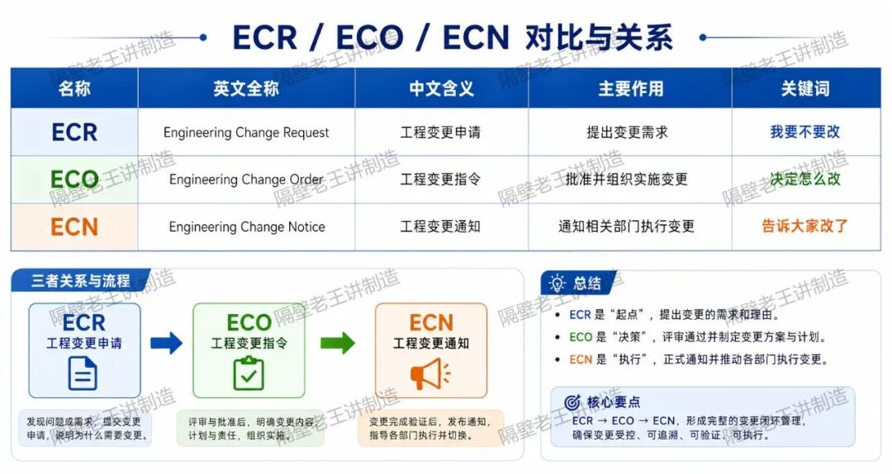
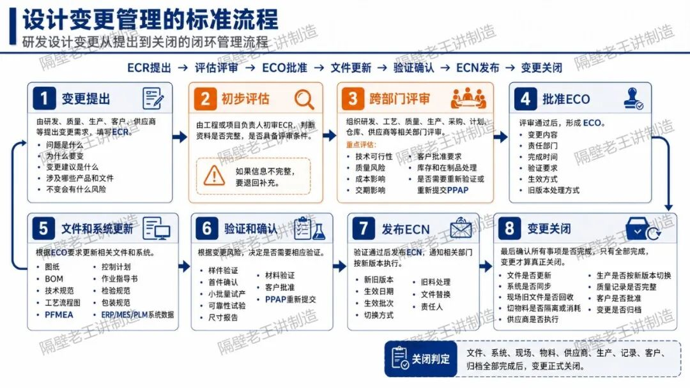
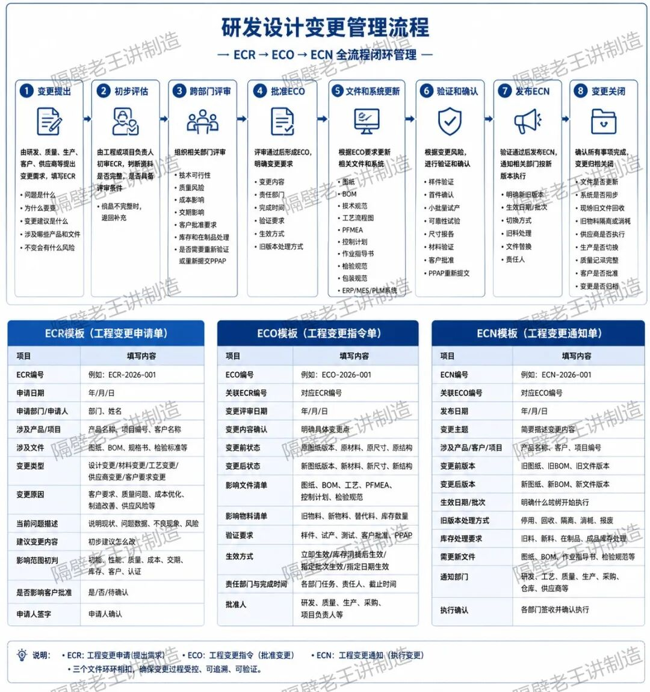
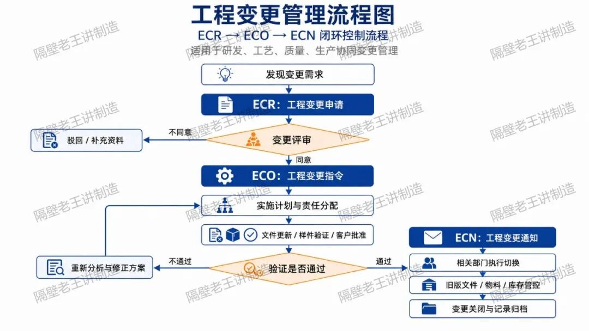
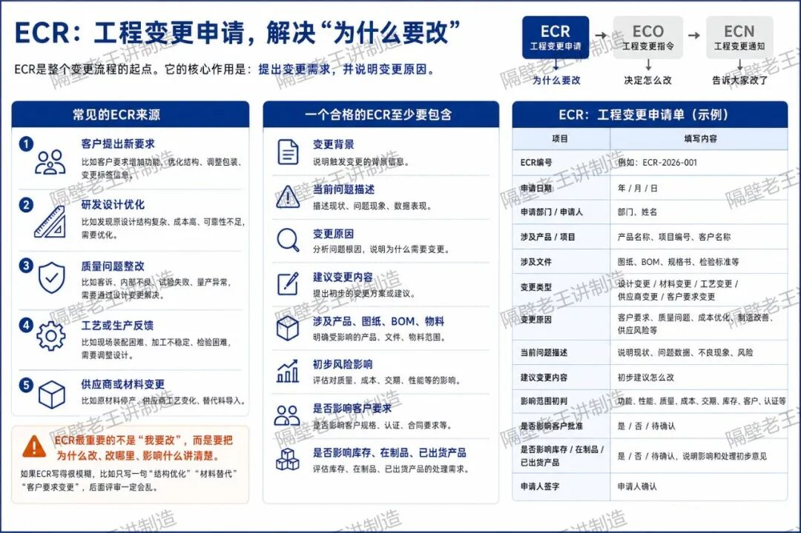
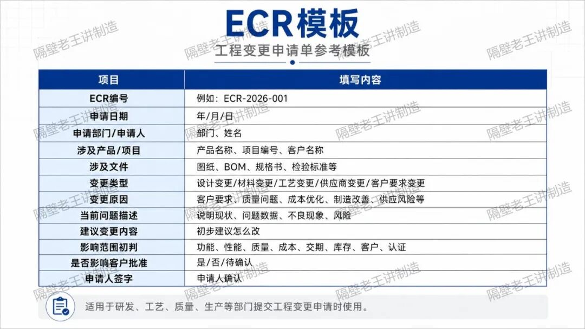
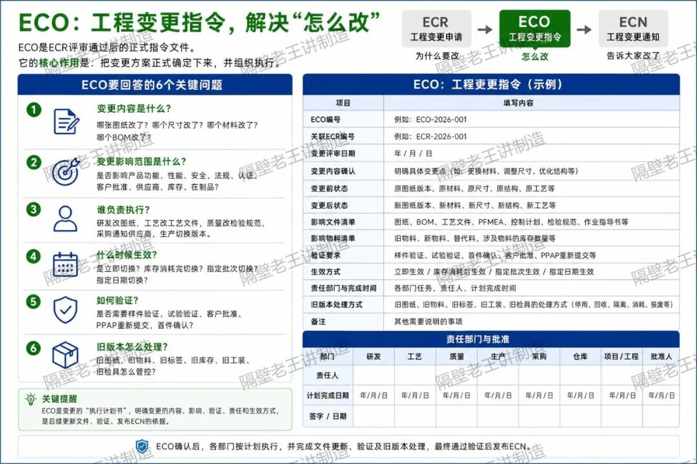
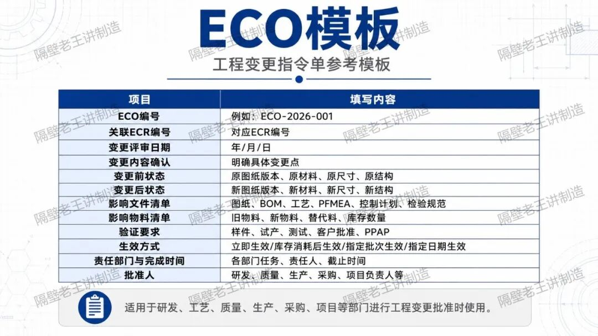
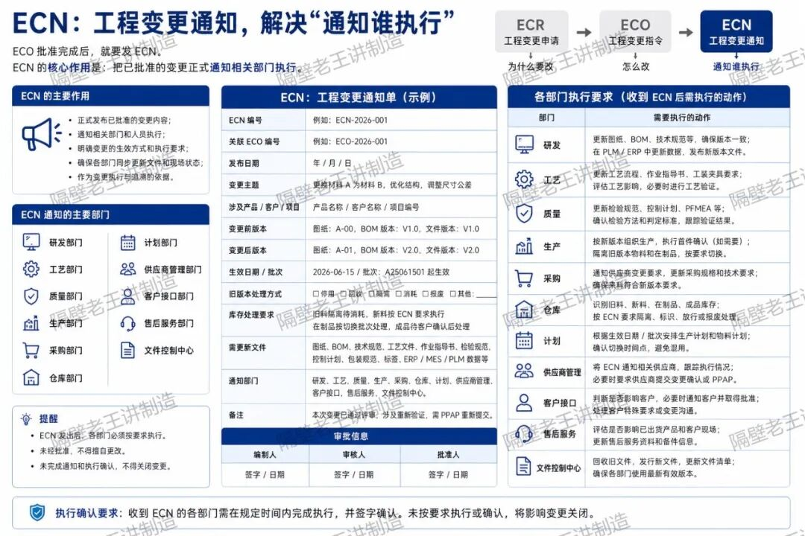
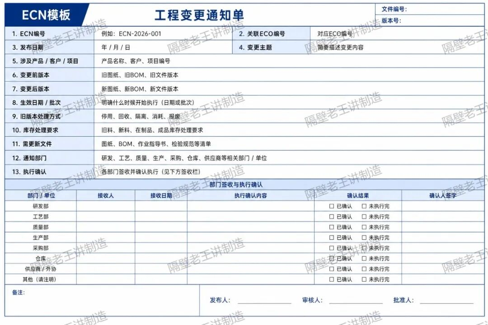

研发设计变更几乎天天发生。图纸改了、材料换了、公差调整了、结构优化了、客户要求变了、供应商工艺变了、测试没通过要整改了……这些都属于设计变更的范畴。
但很多企业一到变更管理，就开始乱： 有人说提ECR，有人说发ECN，有人说走ECO，最后文件传来传去，谁批准、谁执行、谁通知、谁验证，全都不清楚。
更严重的是，变更明明已经发生了，现场还在用旧图纸；研发已经改了BOM，采购还在买旧物料；质量已经收到客户投诉，生产却不知道控制计划要更新。
这就是典型的设计变更失控。
所以，今天这篇文章就把研发设计变更管理讲清楚，重点讲明白三个概念：
ECR是什么？ECO是什么？ECN是什么？以及它们之间到底怎么流转。
一、先把三个概念讲清楚
很多人分不清ECR、ECO、ECN，根本原因是没有理解它们在变更流程里的位置。
可以先看这张表。

这三个东西不是一回事，也不能随便替代。
ECR、ECO、ECN之间的关系详解？


设计变更管理的标准流程
一个比较完整的研发设计变更流程，可以按以下步骤执行。

只有这些都完成，变更才算真正关闭。
ECR提出变更需求，ECO批准并安排变更执行，ECN通知相关部门按新版本实施。
二、ECR：工程变更申请，解决“为什么要改”
ECR是整个变更流程的起点。
它的核心作用是：提出变更需求，并说明变更原因。
也就是说，ECR不是正式变更，它只是一个申请。


三、ECO：工程变更指令，解决“怎么改”
ECR提出以后，不能马上改图纸、改BOM、改工艺。
必须经过评审。
评审通过以后，才会形成ECO。
ECO的核心作用是：把变更方案正式确定下来，并组织执行。


四、ECN：工程变更通知，解决“通知谁执行”
ECO批准完成后，就要发ECN。
ECN的核心作用是：把已批准的变更正式通知相关部门执行。
ECN强调的是通知和执行，不再是讨论要不要改。

ECN最怕什么？
最怕“邮件发了就算通知完成”。
真正有效的ECN必须做到：
发得出去，收得到，看得懂，执行到位，有记录可追溯。 
五、设计变更最容易失控的地方
设计变更管理最怕的不是变更多，而是变更没有闭环。
常见失控点包括：
-
ECR没有写清楚原因，导致评审无法判断。
-
ECO没有明确责任人和完成时间，导致任务没人跟。
-
ECN只发邮件，没有确认相关部门是否执行。
-
图纸改了，但BOM没有同步更新。
-
BOM改了，但ERP系统没有同步。
-
供应商收到通知晚，仍按旧版本供货。
-
生产现场旧图纸没有回收，员工继续按旧文件生产。
-
库存、在制品、成品没有区分新旧状态。
-
变更影响客户要求，但没有提前提交客户批准。
-
变更完成后没有验证，直接切换量产。
这些问题一旦出现，很容易造成混料、错料、客户投诉、批量返工，甚至召回风险。
最后总结
ECR、ECO、ECN并不难区分。
记住这三句话就够了：
ECR是变更申请，重点是说明为什么要改。
ECO是变更指令，重点是明确怎么改、谁来改、什么时候改。
ECN是变更通知，重点是通知相关部门按新版本执行。
设计变更管理不是单纯改一张图纸，也不是发一封通知邮件。
它是一套从申请、评审、批准、实施、验证、通知、切换、关闭的完整闭环。
真正成熟的研发变更管理，必须做到：
-
变更有申请；
-
影响有评估；
-
执行有计划；
-
文件有更新；
-
现场有切换；
-
客户有批准；
-
结果有验证；
-
记录可追溯。
说到底，变更不可怕。
可怕的是变更已经发生了，但组织还不知道、文件没更新、现场没切换、客户没批准。
这才是设计变更管理最大的风险。
-完结-
如果你觉得本文对你有帮助
记得点赞、关注和点喜欢
如果你想进一步和我研究，可以联系我
一起学习、一起进步